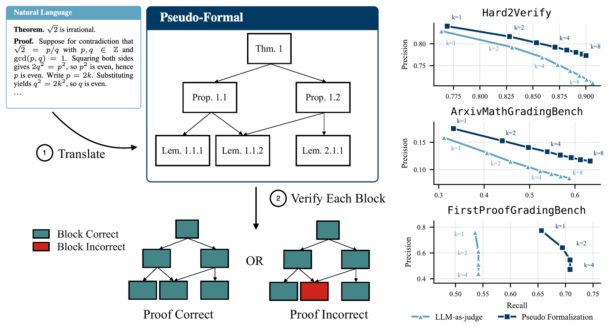

Pseudo-Formalization for
Automatic Proof Verification
Stanford University
* Equal contribution
Fully formal proofs are easy to verify because they are unambiguous and modular, but most proofs — particularly those written by AI systems — have neither property, and translating them into a formal language remains out of reach in many frontier math settings.
Pseudo-Formalization (PF) is a proof format that keeps the modularity and precision of formal proofs while staying in natural language. A Pseudo-Formal proof is decomposed into self-contained modules, each stating its premises, conclusion, and proof. To verify a natural language proof, an LLM translates it into Pseudo-Formal form and then checks each module independently — an algorithm we call Block Verification (BV).
PF + BV pareto-dominates LLM-as-judge baselines on error-finding precision and recall across three benchmarks spanning olympiad and research-level mathematics.

Here is an example of a Pseudo-Formal version of a First Proof problem. The proof is an AI system's submitted attempt (proof 03C of FirstProofGradingBench), shown both as the Pseudo-Formal proof our method translates it into and as the original natural language proof.
Each box is a block of the Pseudo-Formal proof. Arrows point from a block to each block whose proof cites it. Blocks where our verifier found a referee-confirmed error. Drag to pan, pinch or ctrl-scroll to zoom, and click a block to read it.
We release two benchmarks. ArxivMathGradingBench is 100 arXiv mathematics papers whose authors later flagged and corrected an error, giving 109 known errors located by the authors' own revision notes. FirstProofGradingBench is 16 AI proof attempts at research problems, refereed by expert mathematicians, where the ground truth says not just where each error is but what it is.
Each row is a paper whose author corrected an error in a later version. The comment is the author's revision note verbatim; the location is extracted from it.
| Paper | Category | Author's revision note | Error |
|---|
Pseudo-Formal versions of a subset of the papers in openai/math.